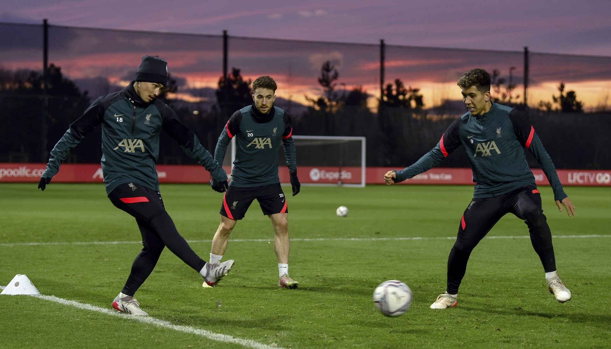

Inside Training:Behing the scenes of Reds 'Fulham preperations
Tsimikas has been sidelined for three weeks after suffering a blow to the ankle in training, which has seen him miss the last six games. The injury was initially described as a minor knock, but the 28-year-old is believed to have endured a setback having later been spotted wearing a protective boot and walking with the aid of crutches. With Ibrahima Konate and Conor Bradley also out, Arne Slot has been left with only five senior defenders for four positions during a busy period. But Tsimikas is now close to a comeback, with the Greek stepping up his recovery with work on the outdoor pitch at the AXA Training Centre on Thursday.